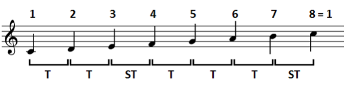
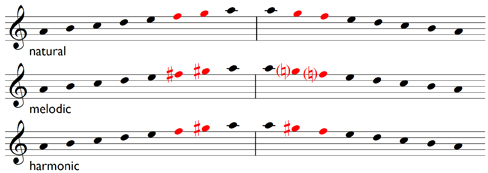

A major scale is a seven-note musical scale with a specific pattern of tones and semitones: T T S T T T S. It forms the basis of most Western music and has a bright, happy sound. The scale's structure is defined by this pattern, not the specific notes, allowing it to be built from any starting note to create different major scales. For example, here is the C major scale:
Minor scales are diatonic scales that have a minor third above the tonic, often creating a sad or melancholic sound. There are three main types: the natural minor, harmonic minor, and melodic minor. Each type is a variation of the same key signature, distinguished primarily by changes to the sixth and seventh scale degrees.
The natural minor scale has the pattern T S T T S T T (a rotated form of its relative major).
The harmonic minor scale has the pattern has the same notes as the minor except that the seventh degree is raised by one semitone, creating an augmented second between the sixth and seventh degrees: T S T T S T+S S.
The melodic minor scale has two different forms: an ascending form and a descending form. It was created as a reaction to the harmonic minor scale by those who thought the T+S jump was too big for their purposes. The ascending form (aka jazz minor scale) raises the sixth by a semitone while the descending form is identical to the natural minor scale.
